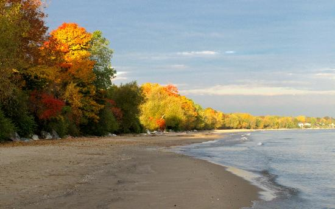

Durand Eastman Park
Stretching along the shores of Lake Ontario, Durand Eastman Park is a sanctuary of towering forests, rolling hills, and hidden trails that twist through nearly a thousand acres of untouched beauty. In the warmer months, hikers wind their way through the dense woods, where sunlight filters through the leaves and the scent of pine lingers in the air. Come winter, the golf course hill transforms into a sledding haven, packed with families racing down the slopes in bursts of laughter. Whether you're chasing the quiet of a morning hike or the thrill of a snowy descent, Durand Eastman Park is a place where every season brings something new to discover.
Durand Eastman Beach
Just beyond the trees, the park opens up to Durand Eastman Beach, a stretch of soft sand where the waves roll in with an easy rhythm. On hot summer days, it's a welcome escape—barefoot walks along the shoreline, the cool lake breeze cutting through the heat, and the water stretching endlessly toward the horizon. But it's the evenings that truly steal the show. As the sun sinks, the sky erupts in a wash of gold, pink, and violet, painting the lake in colors so vivid they feel almost unreal. Watching the sunset here, with your feet in the sand and the sound of waves lapping against the shore, it's impossible not to feel a little spellbound.
The White Lady's Castle
Nestled in the park's dense foliage, a crumbling stone structure stands as a reminder of one of Rochester's most chilling legends. Known as the White Lady's Castle, these weathered ruins are said to be haunted by the spirit of a woman who once lived on the grounds, forever searching for her lost daughter. As the story goes, her ghost still lingers among the trees, watching over the park in a flowing white gown. It's just one more layer to Durand Eastman's charm, a place where history, nature, and mystery intertwine.